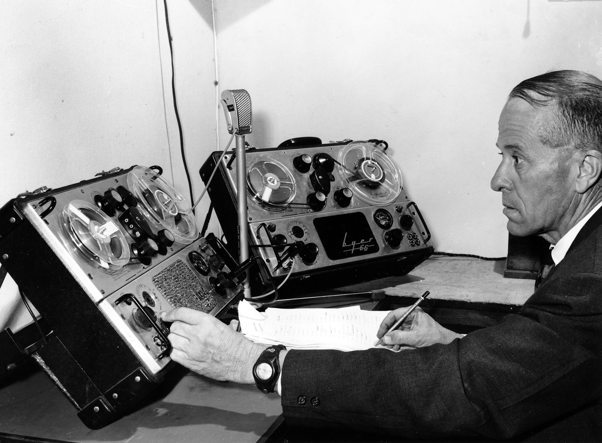

<link rel="import" href="../uqlibrary-elements/0.5.5/lib/vulcanized-flint.html">
<link rel="import" href="uqlibrary-flint-items-core-list.html">
<link rel="import" href="uqlibrary-flint-categories-list.html">
<link rel="import" href="uqlibrary-flint-item.html">
<link rel="import" href="uqlibrary-flint-google-map.html">
<link rel="import" href="uqlibrary-flint-warning-dialog.html">
<!--<link rel="import" href="../icon-transition/icon-transition.html">-->

<polymer-element name="uqlibrary-flint">

  <template>
    <link rel="stylesheet" href="../uqlibrary-elements/resources/theme/element.css" shim-shadowdom>
    <link rel="stylesheet" href="uqlibrary-flint.css" shim-shadowdom>

    <uqlibrary-ga id="ga" appName="FlintCollection"></uqlibrary-ga>

    <core-drawer-panel id="outerDrawerPanel" responsiveWidth="768px">
      <div drawer class="left-drawer">
        <uqlibrary-menu menuFile="flint.json" on-uqlibrary-menu-link-clicked="{{menuLinkClicked}}"></uqlibrary-menu>
      </div>
      <div main layout vertical class="main">
        <uqlibrary-toolbar id="toolbar"
                           on-uqlibrary-toolbar-menu-clicked="{{toggleMenuDrawer}}"
                           on-uqlibrary-toolbar-search-submitted="{{performSearch}}"
                           appTitle="Indigenous Voices of Queensland"
                           appTitleLink="https://www.library.uq.edu.au/fryer-library/indigenous-voices/"
                           appLinks=""
                           searchPlaceholderText="Search Indigenous Voices by keywords">
        </uqlibrary-toolbar>

        <core-drawer-panel id="innerDrawerPanel" main rightDrawer responsiveWidth="768px" drawerWidth="300px"
                           disableSwipe style="margin-top: 64px;">


          <div id="itemDetailDrawer" drawer class="right-drawer">

            <core-animated-pages selected="{{currentDrawerSection}}" valueattr="data-selected-section"
                                 transitions="slide-from-right" id="animatedDrawerPages">
              <section id="infoSection" data-selected-section="infoSection">


                <ul class="three-line-icon-list">
                  <li class="list-item header border" horizontal layout center-center>

                    <div class="avatar">
                      <core-icon icon="info" aria-label="information about this application"></core-icon>
                    </div>

                    <div flex>About this collection</div>
                    <div>
                      <core-a11y-keys target="{{$.closeNoResultsButton}}" keys="{{keyboardNavigationKeys}}"
                                      on-keys-pressed="{{ closeButtonHandler }}"></core-a11y-keys>
                      <paper-icon-button aria-label="Close panel" icon="close" id="closeButton" class="flint-responsive-menu-toggle-icon" on-click="{{toggleItemDetailsDrawer}}"></paper-icon-button>
                    </div>
                  </li>
                  <li class="list-item">

                    <div class="content">
                      <div class="subhead">
                        <!--<icon-transition color="#fff" id="hero" shape="{{ shape }}"></icon-transition>-->
                        <uqlibrary-a11y-link on-tap="{{toggle}}">
                          <core-icon icon="expand-more"></core-icon>What is the Indigenous Voices of Queensland website?
                        </uqlibrary-a11y-link>
                        <core-collapse opened>
                          <div class="line2">
                            Indigenous voices makes available rare, archival recordings of Indigenous languages. The project has digitised, identified, and consulted with Indigenous communities to ensure access for:
                            <ul>
                              <li>Indigenous community members</li>
                              <li>descendants of those whose languages were recorded</li>
                              <li>students</li>
                              <li>researchers, and</li>
                              <li>the public.</li>
                            </ul>
                          </div>
                          <div horizontal layout center-justified>
                            
                          </div>
                          <div class="line3">Photograph provided by the Archives and Records Management Services of the University of Queensland.  UQA S177Photographs of Key People and Occasions associated with the University P835 Aural Analysis of Yiddingi Aboriginal Vernacular by Mr. Flint.
                          </div>
                        </core-collapse>
                      </div>
                    </div>

                    <div class="content">
                      <div class="subhead">
                        <uqlibrary-a11y-link on-tap="{{toggle}}">
                          <core-icon icon="chevron-right"></core-icon>Why were the languages recorded?
                        </uqlibrary-a11y-link>
                        <core-collapse>
                          <div class="line2">
                            The languages were recorded in the 1960s as part of the Queensland Speech Survey conducted by Elwyn Flint of the University of Queensland English Department. The survey included recording varieties of English spoken throughout Queensland, including varieties of English spoken in Aboriginal reserves and missions.  While Flint and his assistants visited these reserves and missions, they also were able to record samples of some of the traditional Indigenous languages spoken by people living there at the time.  The Queensland Speech Survey thus includes one of the largest and broadest collection of recordings of Indigenous languages spoken in Queensland in the 20th century.
                          </div>
                        </core-collapse>
                      </div>
                    </div>

                    <div class="content">
                      <div class="subhead">
                        <uqlibrary-a11y-link on-tap="{{toggle}}">
                          <core-icon icon="chevron-right"></core-icon>About Queensland Indigenous Languages
                        </uqlibrary-a11y-link>
                        <core-collapse>
                          <div class="line2">
                            Flint’s recordings were made of people who were living on reserves and missions, mostly in the North of the State, including some Torres Strait Islands. He also visited Woorabinda in Central Queensland and Cherbourg in South-East Queensland. He was not attempting a comprehensive survey of all Queensland Indigenous languages still spoken.
                          </div>
                          <div class="line2">
                            The languages that are available for listening here are only a fraction of the number of languages that were spoken in Queensland prior to colonial settlement. Indigenous languages of Queensland began to decline from the very start of colonial settlement in the 1820s through rapid population decline and removal of peoples from their traditional lands.
                          </div>
                          <div class="line2">
                            Even by the 1960s, most languages of Queensland were no longer spoken, or were no longer being spoken by younger generations. When children no longer learn their parent’s language, it inevitably falls out of use. In Queensland, traditional languages have largely been replaced by varieties of English and Creole.  Today while many people can say things in their traditional language, such as words and songs, very few are spoken in daily conversation by all generations. The remaining strong Queensland languages exist on the Cape York Peninsula (eg. Wik Mungkan) and in the Torres Strait Islands (eg. Kala Lagaw Ya).
                          </div>
                        </core-collapse>
                      </div>
                    </div>

                    <div class="content">
                      <div class="subhead">
                        <uqlibrary-a11y-link on-tap="{{toggle}}">
                          <core-icon icon="chevron-right"></core-icon>Who was Elwyn Flint?
                        </uqlibrary-a11y-link>
                        <core-collapse>
                          <div class="line2">
                            Elwyn Henry Flint (1910-1983) was an academic in the English department at The University of Queensland. He completed honours in Modern Languages and Literature in 1927, and was appointed as a reader, before becoming a priest in 1938. He was an army chaplain and intelligence officer before being discharged in 1946. His major research work is the Queensland Speech Survey, which is preserved in his papers at Fryer Library, The University of Queensland Library.
                          </div>
                          <div class="line2">
                            You can find out more about Elwyn Flint and the Queensland Speech Survey at <a href="https://www.library.uq.edu.au/fryer-library/fryer-collections">Fryer Library</a>.
                          </div>
                        </core-collapse>
                      </div>
                    </div>

                    <div class="content">
                      <div class="subhead">
                        <uqlibrary-a11y-link on-tap="{{toggle}}">
                          <core-icon icon="chevron-right"></core-icon>Why were the languages made available?
                        </uqlibrary-a11y-link>
                        <core-collapse>
                          <div class="line2">
                            Since Flint’s death the collection has been part of Fryer Library, The University of Queensland Library. In 2013, the Library digitised the original reel-to-reel tapes to ensure the continued preservation of the data.
                          </div>
                          <div class="line2">
                            Although Flint was not a linguist, the recordings of Aboriginal and Torres Strait Islander languages have become increasingly important, especially for languages that are no longer spoken or near to not being spoken.
                          </div>
                          <div class="line2">
                            Prior to colonisation, Aboriginal and Torres Strait Islanders spoke over 300 distinct languages. Since colonisation, these languages suffered decline due to population decline, removal of people from their country, active prevention of language use and the influx of English and contact languages. By the 1960s many Queensland languages were only spoken by older generations. Today almost no Queensland languages are learned by children as their first language.
                          </div>
                          <div class="line2">
                            The collection has been made available so that community members can easily access these important heritage recordings, and that the wider community can appreciate the diversity of Queensland Indigenous languages, and learn about what they sound like. The recordings can be used for teaching and learning about Indigenous languages, and by community members for developing materials to teach their languages.
                          </div>
                        </core-collapse>
                      </div>
                    </div>

                    <div class="content">
                      <div class="subhead">
                        <uqlibrary-a11y-link on-tap="{{toggle}}">
                          <core-icon icon="chevron-right"></core-icon>How were the languages identified?
                        </uqlibrary-a11y-link>
                        <core-collapse>
                          <div class="line2">
                            In the 1990s, Jeanie Bell, Anke Boewe, Kate Donnelly and Mary Laughren completed a project to document the materials in the Queensland Speech Survey which related to Australian Aboriginal languages and their speakers.
                          </div>
                          <div class="line2">
                            Following digitisation, the School of Languages and Comparative Cultural Studies and UQ Library were funded by the Australian National Data Service to expand on this work. By identifying languages, transcribing conversations, and contacting speakers of the languages for cultural permissions, we are providing access to all community members to these unique recordings of Indigenous languages.
                          </div>
                        </core-collapse>
                      </div>
                    </div>

                    <div class="content">
                      <div class="subhead">
                        <uqlibrary-a11y-link on-tap="{{toggle}}">
                          <core-icon icon="chevron-right"></core-icon>Using Indigenous Voices of Queensland website
                        </uqlibrary-a11y-link>
                        <core-collapse>
                          <div class="line2">
                            Browse the website by:
                            <ul>
                              <li>Languages: headings for Indigenous languages are provided by the AIATSIS Language Thesaurus</li>
                              <li>Voices: names of contributors recorded by the original Queensland Speech Survey</li>
                              <li>Place: the map suggests general areas where the language may have been traditionally spoken. Places are indicative only.</li>
                            </ul>
                          </div>
                          <div class="line2">
                            You can also search (using the search box at the top of the screen) to find results for a particular language or contributor.
                          </div>
                          <div class="line2">
                            Searching for keywords (such ‘eat’ or ‘shoulder’) will display a list of results where the words are mentioned in the title or transcript of a record. You can listen to the audio to hear the words spoken in the Indigenous languages of this exhibition.
                          </div>
                        </core-collapse>
                      </div>
                    </div>

                    <div class="content">
                      <div class="subhead">
                        <uqlibrary-a11y-link on-tap="{{toggle}}">
                          <core-icon icon="chevron-right"></core-icon>Acknowledgements
                        </uqlibrary-a11y-link>
                        <core-collapse>
                          <div class="line2">
                            This project is supported by the Australian National Data Service (ANDS). ANDS is supported by the Australian Government through the National Collaborative Research Infrastructure Strategy Program.
                          </div>
                          <div class="line2">
                            We would also like to acknowledge:

                            <ul>
                              <li>The Australian Institute of Aboriginal and Torres Strait Islander Studies (AIATSIS),</li>
                              <li>The State Library of Queensland, and</li>
                              <li>The State Library of Queensland Indigenous Knowledge Centres</li>
                            </ul>
                          </div>
                        </core-collapse>
                      </div>
                    </div>

                    <div class="content">
                      <div class="subhead">
                        <uqlibrary-a11y-link on-tap="{{toggle}}">
                          <core-icon icon="chevron-right"></core-icon>How to reference this collection
                        </uqlibrary-a11y-link>
                        <core-collapse>
                          <div class="line2">
                            Please use the following to cite or reference the Indigenous Voices of Queensland collection:
                          </div>
                          <div class="line3">
                            Flint, Elwyn Henry (2015): Indigenous languages recorded as part of the Queensland Speech Survey. The University of Queensland. Collection. <a href="http://dx.doi.org/10.14264/uql.2015.467">doi:10.14264/uql.2015.467</a>
                          </div>
                        </core-collapse>
                      </div>
                    </div>
                </ul>

              </section>
              <section id="itemsListSection" data-selected-section="itemsListSection">
                <uqlibrary-flint-items-core-list id="itemsListElement"
                                                 on-close-button-clicked="{{toggleItemDetailsDrawer}}"
                                                 on-item-selected="{{displayItemDetails}}"
                                                 on-play-record-clicked="{{playRecord}}"></uqlibrary-flint-items-core-list>
              </section>
              <section id="itemSection" data-selected-section="itemSection">
                <uqlibrary-flint-item id="itemElement"
                                      on-close-button-clicked="{{toggleItemDetailsDrawer}}"
                                      on-back-button-clicked="{{displayListSection}}"></uqlibrary-flint-item>
              </section>
            </core-animated-pages>

            <div id="activePlayerWrapper">
              <div layout vertical fit>

                <div>
                  <x-audio id="audioPlayer" disabled showVolumeControls?="{{!isIOS}}" showSeekControl></x-audio>
                </div>
                <div class="currentlyPlayingTitle">
                  Currently playing: {{$.audioPlayer.name || '--'}}
                </div>
              </div>
            </div>

          </div>
          <div main layout vertical relative class="main">

            <div id="headerPlayerMirrorWrapper" class="{{isIOS ? 'ios' : ''}}" hidden?="{{$.audioPlayer.src == '' || !$.innerDrawerPanel.narrow || searchActivated}}">
              <x-audio-mirror id="headerPlayerMirror" showVolumeControls?="{{!isIOS}}"></x-audio-mirror>
            </div>

            <paper-tabs selected="{{currentSection}}" valueattr="data-selected-section">
              <paper-tab data-selected-section="mapSection" id="mapSection" on-tap="{{centerMapIfSelected}}">
                <uqlibrary-a11y-link>Map</uqlibrary-a11y-link>
              </paper-tab>
              <paper-tab data-selected-section="languageSection">
                <uqlibrary-a11y-link>Languages</uqlibrary-a11y-link>
              </paper-tab>
              <paper-tab data-selected-section="voicesSection">
                <uqlibrary-a11y-link>Voices</uqlibrary-a11y-link></paper-tab>
            </paper-tabs>

            <core-animated-pages selected="{{currentSection}}" valueattr="data-selected-section"
                                 transitions="slide-from-right" flex id="animatedPages">
              <section id="mapDisplaySection" data-selected-section="mapSection">
                <uqlibrary-flint-categories-list id="mapList" showMap="true" on-category-selected="{{categorySelected}}"></uqlibrary-flint-categories-list>
              </section>
              <section id="languageListSection" data-selected-section="languageSection">
                <uqlibrary-flint-categories-list id="languagesList" on-category-selected="{{categorySelected}}"></uqlibrary-flint-categories-list>
              </section>
              <section id="voiceListSection" data-selected-section="voicesSection">
                <uqlibrary-flint-categories-list id="voicesList" on-category-selected="{{categorySelected}}"></uqlibrary-flint-categories-list>
              </section>
            </core-animated-pages>

          </div>
        </core-drawer-panel>

      </div>
    </core-drawer-panel>

    <uqlibrary-flint-warning-dialog autoOpen
                                    cancelRedirectUrl="https://www.library.uq.edu.au/fryer-library/"></uqlibrary-flint-warning-dialog>

  </template>

  <script>
    (function () {
      Polymer('uqlibrary-flint', {

        // Accessibility issues fixes
        keyboardNavigationKeys: 'space enter',
        a11yKeyPressed: function (source, event) {
          if (source.path && source.path.length > 0 && source.path[0].target) {
            source.path[0].target.fire("tap");
          }
        },
        activePlayer: null,
        activeAudioSrc: null,
        activeAudioMirror: null,
        searchActivated: false,
        isIOS: false,

        ready: function () {
          var that = this;
          var toolbarHeight = this.$.toolbar.clientHeight;
          var playerHeight = this.$.activePlayerWrapper.clientHeight;
          var listHeight = window.innerHeight - toolbarHeight - playerHeight;
          var innerPanelHeight = window.innerHeight - toolbarHeight;

          this.isIOS = navigator.userAgent.match(/iP(?:hone|ad;(?: U;)? CPU) OS (\d+)/);
          that.$.animatedDrawerPages.setAttribute('style', 'overflow-x: hidden; overflow-y: auto; height: ' + innerPanelHeight + 'px');
          that.$.itemsListSection.setAttribute('style', 'height: ' + listHeight + 'px');
          that.$.innerDrawerPanel.setAttribute('style', 'margin-top:64px; height: ' + innerPanelHeight + 'px');

          window.addEventListener('resize', function() {
            listHeight = window.innerHeight - toolbarHeight - playerHeight;
            innerPanelHeight = window.innerHeight - toolbarHeight;

            that.$.animatedDrawerPages.setAttribute('style', 'overflow-x: hidden; overflow-y: auto; height: ' + innerPanelHeight + 'px');
            that.$.itemsListSection.setAttribute('style', 'height: ' + listHeight + 'px');
            that.$.innerDrawerPanel.setAttribute('style', 'margin-top:64px; height: ' + innerPanelHeight + 'px');

            var responsiveWidth = parseInt(that.$.innerDrawerPanel.responsiveWidth);

            if (responsiveWidth > window.innerWidth) {
              that.$.innerDrawerPanel.drawerWidth = "95%";
            } else if (responsiveWidth <= window.innerWidth) {
              that.$.innerDrawerPanel.drawerWidth = "50%";
            }
          });

          var responsiveWidth = parseInt(this.$.innerDrawerPanel.responsiveWidth);

          if (responsiveWidth > window.innerWidth) {
            this.$.innerDrawerPanel.drawerWidth = "95%";
          } else if (responsiveWidth <= window.innerWidth) {
            this.$.innerDrawerPanel.drawerWidth = "50%";
          }

          this.currentSection = "mapSection";

          // Fix Google map bug when window is resized and map is hidden
          this.$.animatedPages.addEventListener('core-animated-pages-transition-end', function() {
            if (that.currentSection == "mapSection") {
              that.$.mapList.resizeMap();
            }
          });

          document.addEventListener('x-audio-initialized', function(e, source) {
            that.$.audioPlayer.disabled = false;
            that.$.headerPlayerMirror.xaudio = that.$.audioPlayer;
            that.activeAudioSrc = that.$.audioPlayer.src;
            that.$.audioPlayer.play();
            that.activePlayer = that.$.audioPlayer;

          });

          document.addEventListener('x-audio-list-pause', function(e) {
            that.$.audioPlayer.pause();
          });

          document.addEventListener('x-audio-list-play', function(e, source) {
            if(that.activeAudioSrc && (that.activeAudioSrc != e.detail.src) || that.activeAudioSrc == null)  {
              if(that.$.audioPlayer.src) {
                that.$.audioPlayer.pause();
              }
              that.$.audioPlayer.setSrc(e.detail.src);
              that.$.audioPlayer.name = e.detail.name;
            }
            else {
              that.$.audioPlayer.play();
            }

            if( that.activeAudioMirror != null) {
              that.activeAudioMirror.togglePlay();
            }
          });

          document.addEventListener('x-audio-play', function(e) {
            that.fire('x-audio-player-play', {audio: that.$.audioPlayer.audio});
          });

          document.addEventListener('x-audio-pause', function(e) {
            that.fire('x-audio-player-pause', {audio: that.$.audioPlayer.audio});
          });

          document.addEventListener('uqlibrary-flint-request-current-audio', function(e) {
            that.fire('uqlibrary-flint-response-current-audio', {audio: that.$.audioPlayer.audio, isPlaying: that.$.audioPlayer.isPlaying})
          });


        },

        // TODO: use for icon-transition
//        shape: 'plus',
//        pickShape: function(e, target, sender) {
//          this.shape = sender.shape;
//        },
//        triggerTransition: function(e, target, sender) {
//          var shape = sender.attributes['data-shape'].value;
//          if (!!shape) {
//            this.shape = shape;
//          }
//        },

        // TODO: Use a11y-links to make these accessible
        // toggles core-collapse and updates icon for infoSection stuff
        toggle: function(sender) {
          var toggler = sender.target;
          var togglerParent = toggler.parentNode;

          //handle icon click
          if (toggler.nodeName == "CORE-ICON") {
            if (togglerParent.parentNode.querySelector('core-collapse').classList == "core-collapse-closed") {
              toggler.icon = "expand-more";
            } else if (togglerParent.parentNode.querySelector('core-collapse').classList != "core-collapse-closed") {
              toggler.icon = "chevron-right";
            }
            togglerParent.parentNode.querySelector('core-collapse').toggle();
          } else {
            // handle text click
            if (togglerParent.querySelector('core-collapse').classList == "core-collapse-closed") {
              toggler.querySelector('core-icon').icon = "expand-more";
            } else if (togglerParent.querySelector('core-collapse').classList != "core-collapse-closed") {
              toggler.querySelector('core-icon').icon = "chevron-right";
            }
            togglerParent.querySelector('core-collapse').toggle();
          }


        },

        centerMapIfSelected: function () {
          if (this.currentSection === "mapSection") {
            this.fire('uqlibrary-flint-map-center-tap');
          }
        },

        toggleItemDetailsDrawer: function () {
          this.$.innerDrawerPanel.togglePanel();
        },

        toggleMenuDrawer: function () {
          this.$.outerDrawerPanel.togglePanel();
        },

        performSearch: function(e) {
          if (!!e.detail.searchTerm) {
            this.$.ga.addEvent('search', e.detail.searchTerm);
            this.$.itemsListElement.setData( { searchTerm: e.detail.searchTerm });
            this.currentDrawerSection = 'itemsListSection';
            this.toggleItemDetailsDrawer();
          }
        },

        currentSectionChanged : function(oldValue, newValue){

          switch(this.currentSection) {
            case "languageSection":
              //setup languages list
              this.$.ga.addEvent('showLanguages');
              this.$.languagesList.setData({ displayLanguages: true });
              break;
            case "voicesSection":
              //setup voices list
              this.$.ga.addEvent('showVoices');
              this.$.voicesList.setData({ displayVoices: true });
              break;
            case "mapSection":
              //setup map
              this.$.ga.addEvent('showMap');
              this.$.mapList.setData({ displayLanguages: true });
              break;
          }
        },

        categorySelected: function(e) {
          switch(this.currentSection) {
            case "mapSection":
              this.$.itemsListElement.setData( { language: e.detail });
              this.$.ga.addEvent('selectedFromMap', e.detail.cvo_title);
              this.toggleItemDetailsDrawer();
              break;
            case "languageSection":
              this.$.ga.addEvent('selectedFromLanguages', e.detail.cvo_title);
              this.$.itemsListElement.setData( { language: e.detail });
              this.toggleItemDetailsDrawer();
              break;
            case "voicesSection":
              this.$.ga.addEvent('selectedFromVoices', e.detail.cvo_title);
              this.$.itemsListElement.setData( { voice: e.detail });
              this.toggleItemDetailsDrawer();
              break;
          }

          this.currentDrawerSection = 'itemsListSection';
        },

        displayItemDetails: function(e) {
          this.$.ga.addEvent('viewRecord', e.detail.item.id);
          this.currentDrawerSection = 'itemSection';
          this.$.itemElement.item = e.detail.item;
          this.fire('uqlibrary-flint-request-current-audio');
        },

        displayListSection: function(e) {
          this.currentDrawerSection = 'itemsListSection';
          this.fire('uqlibrary-flint-request-current-audio');
        },

        menuLinkClicked: function(e) {
          switch(e.detail) {
            case "#about":
              this.$.ga.addEvent('showInfo');
              this.currentDrawerSection = 'infoSection';

              this.toggleMenuDrawer();
              this.toggleItemDetailsDrawer();
              break;
          }
        }
      })
    })();
  </script>

</polymer-element>
